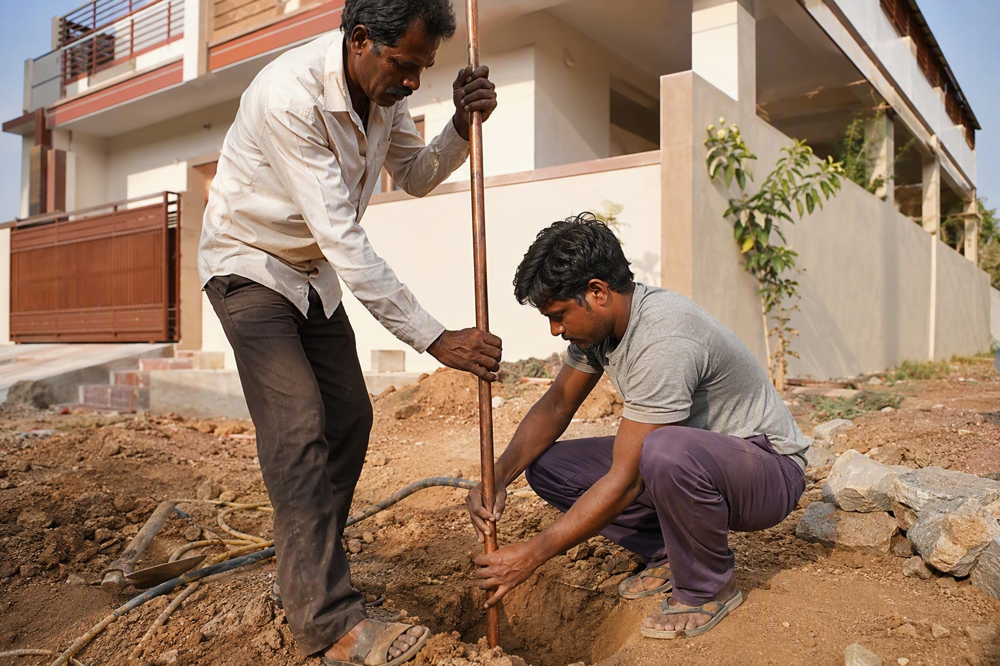

House Earthing in Bangalore: Types, Materials and What It Costs

Earthing is invisible, buried, and the first thing cut when a contractor wants to save money. It is also the system that decides whether a fault kills an appliance or a person.
What earthing actually does
An earthing system gives fault current a deliberate low-resistance path to ground. When a live wire touches an appliance body, the current runs to earth rather than through whoever touches it, and the resulting surge trips the MCB or RCCB. Without a good earth, that appliance body simply stays live and waits.
It also gives surge and lightning protection a discharge path, and gives sensitive electronics a stable reference — a poor earth is behind a surprising number of unexplained equipment failures.
Conventional versus chemical earthing
| Conventional (pipe/plate) | Chemical / maintenance-free | |
|---|---|---|
| Method | GI or copper pipe or plate in a pit with salt and charcoal | Filled electrode with backfill compound |
| Approx material cost | ₹3,500 – ₹9,000 per pit | ₹6,500 – ₹18,000 per pit |
| Maintenance | Needs periodic watering and inspection | Effectively maintenance free |
| Resistance stability | Varies with soil moisture and season | Stable through the year |
| Life | 8–15 years depending on soil | 15–25 years |
Bangalore's rocky, often dry soil makes resistance harder to achieve than in alluvial regions, which is why chemical earthing has become the practical default for independent houses here.
How many earth pits does a house need?
- Apartment or small flat — the building's earthing serves you; verify continuity at your sockets.
- Independent house — at least two pits: one for the neutral/body earth and one separate earth. Three is common on larger homes.
- With solar or a borewell pump — an additional dedicated pit is usually specified.
- With sensitive electronics or a home office — a clean, dedicated earth is worth the extra pit.
Target resistance and how to verify it
For domestic installations, aim for an earth resistance below 5 ohms, and below 1 ohm where sensitive equipment or solar is involved. This is measurable — an earth resistance tester gives a number in minutes. Ask your electrician to test and record it, and to retest after the monsoon. An earthing system that has never been measured is an assumption, not a protection.
What the material list looks like
- Earth electrode — GI pipe, copper-bonded rod or chemical electrode.
- Earth strip — GI or copper, sized to the installation.
- Backfill compound or salt and charcoal.
- Earth pit chamber with a removable cover, so it can actually be inspected later.
- Earth wire — green, run to every socket and appliance point.
- Clamps, bolts and a test link at the board.
Where earthing goes wrong
- The pit is covered permanently under a driveway or tile, so it can never be inspected or watered.
- Earth continuity is not run to every socket — common in older homes and in cost-cut new ones. Every 6A and 16A socket needs an earth conductor.
- Neutral and earth are bridged at the board as a shortcut. This defeats the RCCB and is genuinely dangerous.
- Resistance is never measured, so nobody knows whether the system works.
- Copper strip is substituted with thinner material once the pit is closed and no one is looking.
See the full range and approximate rates on our earthing products page.
Send your list on WhatsApp for an exact quote within 60 minutes. Approximate ranges on this page are for planning; WhatsApp 88676 76700 for today's firm rate, with no pressure to buy.
Frequently asked questions
How much does house earthing cost in Bangalore?
What is the difference between conventional and chemical earthing?
How many earth pits does a house need?
What earth resistance is acceptable for a home?
Why is earthing important in a house?
What are the common mistakes in house earthing?
Ready to order for your home?
Upload your wiring list for an instant quote — 100% original material, free next-day delivery across Bangalore.